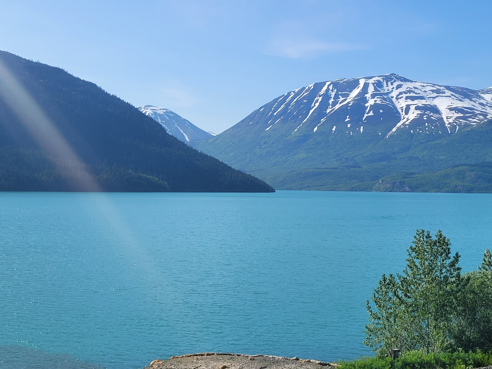

The first day of my trip to Alaska was pretty awful. My family and I had to be at the airport, ready to fly,
at about four
in the morning. From there, we spent several hours on planes and in airports. It was not fun. But, we
eventually made it to Anchorage, AK. We slept. That was the whole day.
Day 2
The next morning wasn't too exciting either: We got a rental car and went grocery shopping, getting snacks
and sandwich stuff for lunches for certain days of the trip. Then, we returned once again, to the airport.
Our flight ended up getting delayed by about two hours (Yay!), but before to long we were headed up to the
northernmost settlement in the United States.
Way Up North
Near the northernmost point in the United States, there is a little town known as Utqiaġvik, or Barrow.
Utqiaġvik was the name used for the place by the Iñupiat people, but at some point it became known as
Barrow, and then it switched back to Utqiaġvik. When we traveled up there, most of the local people
seemed to refer to it as Barrow. The name of the town is a bit confusing.
Despite the naming confusion, the town is very interesting. Historically, whaling has always been
important in their community. Another important thing about the town is its geography. It is located in
a tundra, and because of this, all of the buildings are constructed on stilts to keep the permafrost
from getting melted by excess heat. Also due to its location, the day-night cycle is bit wonky. While we
were there, the sun did not set. The whole place made me feel like I was on another planet.
Day 3
After exploring Barrow, we got back on a plane and headed to Anchorage. Then, we drove up to a cottage and
stayed the night there. (The cottage was pretty neat. Good choice.)
Day 4
On the fourth day, I was going to go for a walk with my dad, but he gave up on walking the slightly more
intense part of the trail we were on, so I went by myself. After probably a quarter of a mile, I decided
that a potential encounter with a bear, trying to navigate a narrow, twisty, and steep path, and getting
ABSOLUTELY SWARMED BY MOSTQUITOES was not worth it. So I headed back. Would not recommend walking through
the Alaskan woods alone.
Day 5-12
We did something.
Picture

I don't remember exactly where this picture was taken, but I looked through pictures on my phone and I
thought that this one looked pretty, so I put it on this project. I believe this was toward the end of
my
trip when we were mostly just driving around and taking pictures at the numerous scenic overlooks and
things
that were on the side of the road. Seriously, there were a ton of little scenic viewpoints. You couldn't
go more than two miles before there was another pulloff. The whole place was very beautiful. We had to
spend a lot of time driving, but I didn't regret it because it gave me more time to just look out the
window at the scenery.